Die Stammbäume der Familie
Dies sind eure Stammbäume bis zur siebten Generation, so weit ich sie heute kenne, mit den Daten von Geburt, Tod, Heirat und Ankunft in Brasilien. Beginnt mit Baum 1 und folgt den Hinweisen „continua na árvore”. Wer nicht erscheint, ist mir noch unbekannt; in den Kästchen sind „pais a descobrir” und „data a descobrir” die Fragen, die ich euch hinterlasse. Die Baumdiagramme sind portugiesisch beschriftet: „n.” bedeutet geboren, „†” gestorben, „∞” verheiratet, „chegou” angekommen, „continua na árvore N” Fortsetzung in Baum N, „pais a descobrir” Eltern noch unbekannt (und „data a descobrir” Datum noch unbekannt). Ein guter Teil der älteren Daten stammt von FamilySearch, einem kollaborativen Stammbaum, und muss noch in den Büchern nachgeprüft werden. Lebende Personen erscheinen nur mit dem Jahr oder ohne Datum.


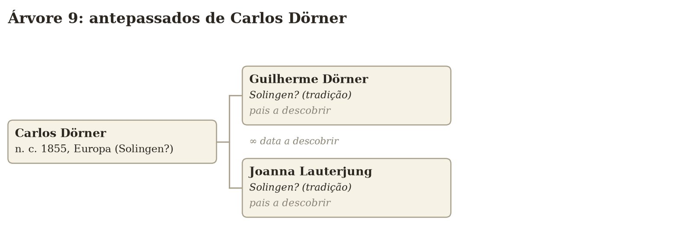
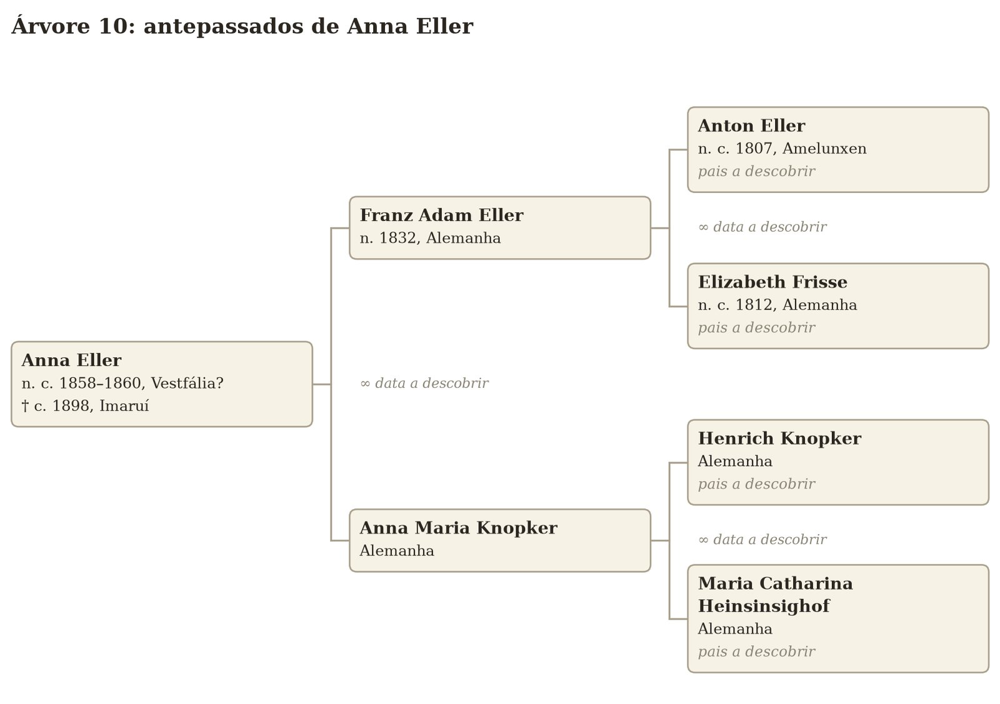

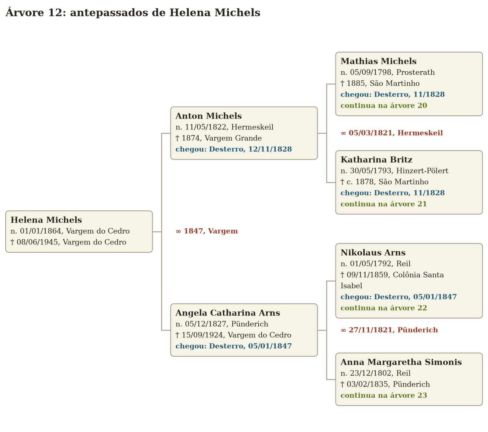
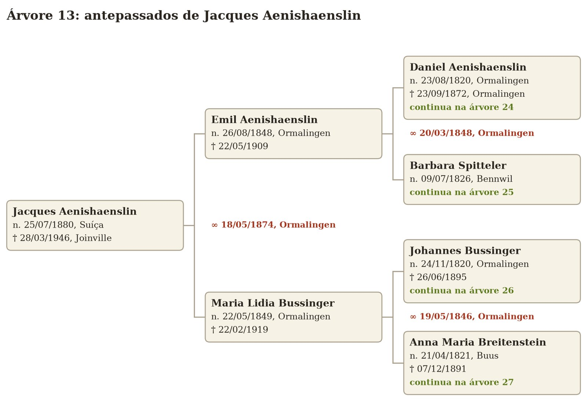

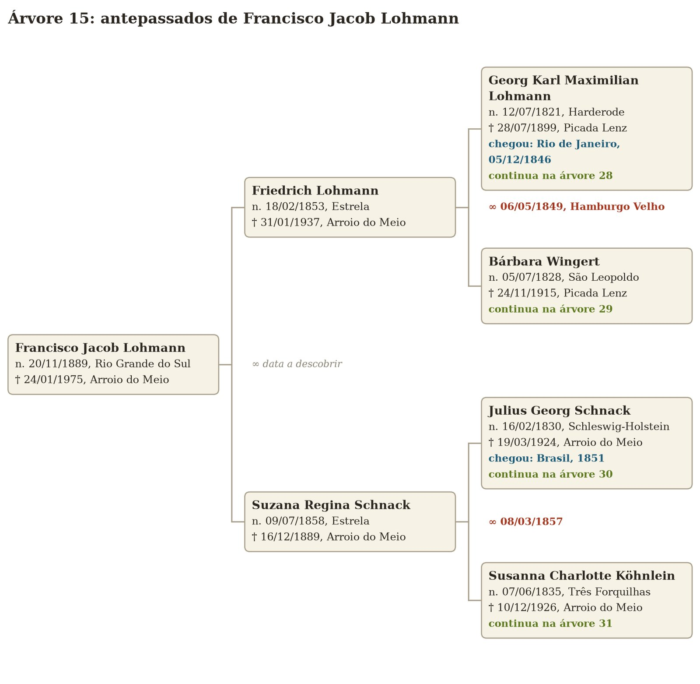

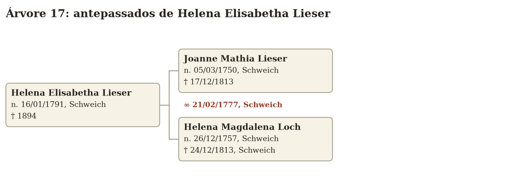

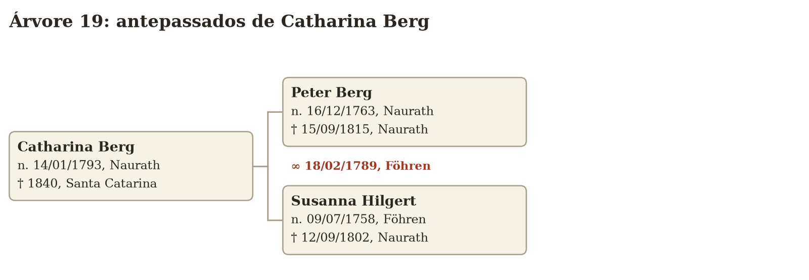
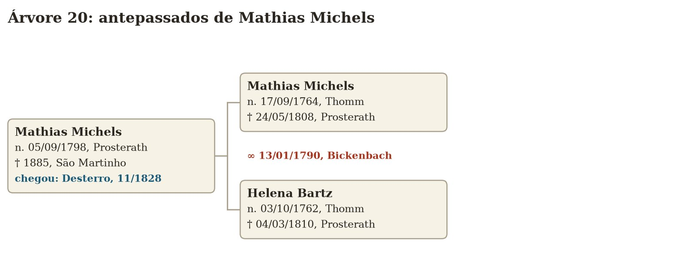

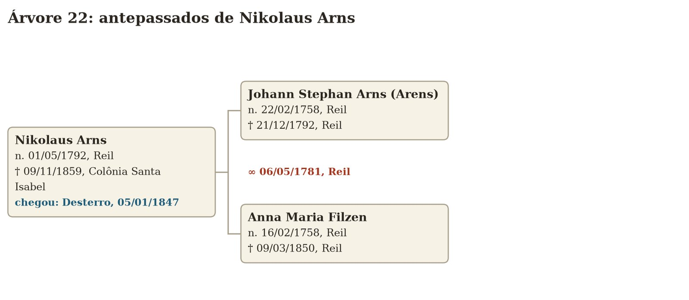
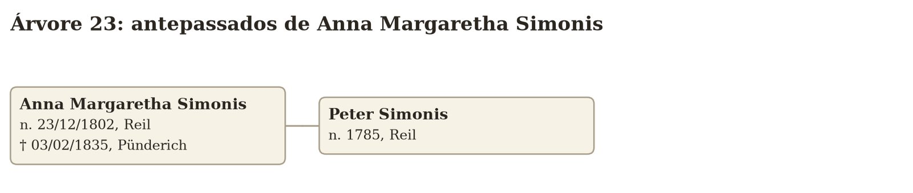

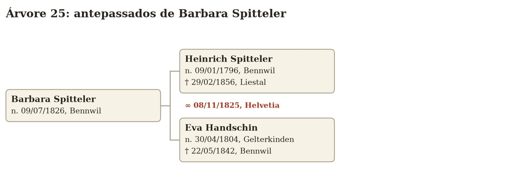
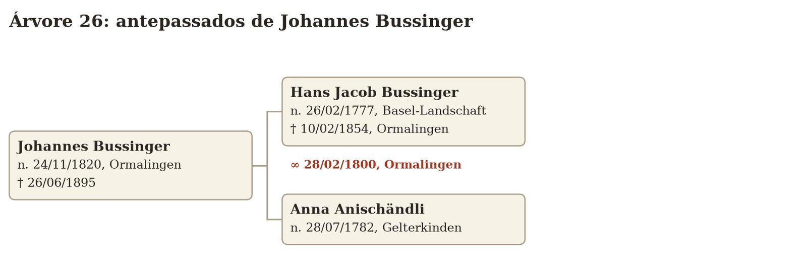

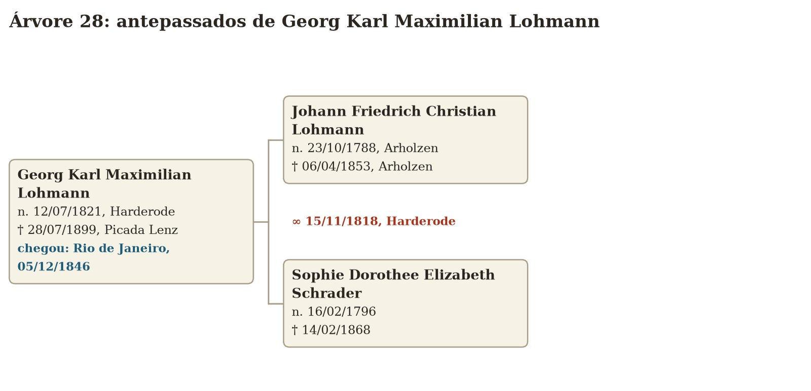
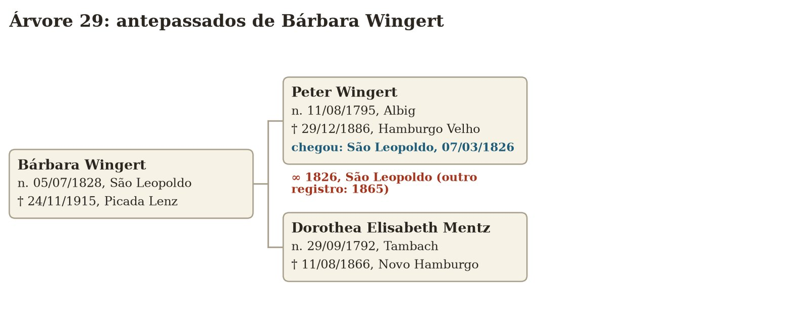
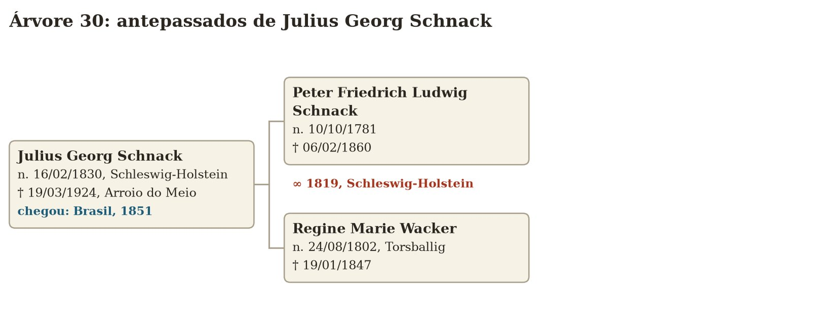
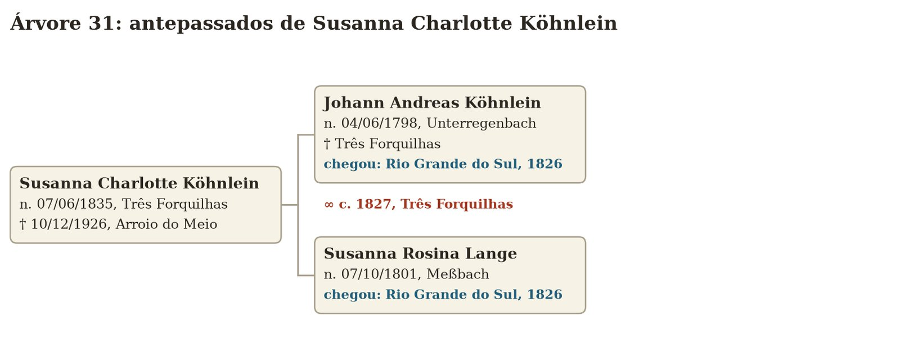